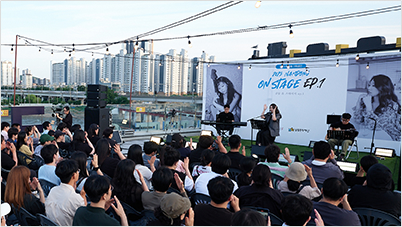
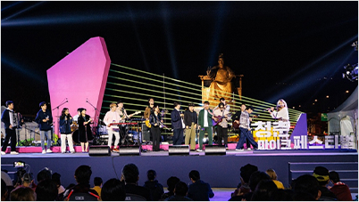

10주년 페스타
-
장소
서울 광화문광장 일대 및 전국 각지
-
기간
20203년 10월 1일(일) ~ 10월 31일(화) / 10월 한 달간
-
주요 프로그램
맨날 만날 문화 쿠폰, 3일간의 특별한 행복,
특별·연계 프로그램 등 -
주최 / 주관
문화체육관광부, 지역문화진흥원
-
협력기관
어린이와작은도서관협회, 전국지역문화재단연합회,
한국도서관문화진흥원, 한국문화예술회관연합회,
한국문화원연합회, 한국문화의집협회, 한국박물관협회,
한국사립미술관협회
3일간의 특별한 행복 : 문화가 있는 날 베스트 프로그램
-
금요일 저녁에 만나는 10주년 베스트 프로그램
문화가 있는 날, 다시보는 집콘
"대한민국의 문화, 집으로부터 시작한다"라는 컨셉을 통해
다양한 분야의 예술가들이 참여를 이끌어 내며,
국민에게 많은 사랑을 받았던 [문화가 있는 날, 집콘]문화가 있는 날의 대표 프로그램 중 하나인 집콘을
광화문 광장 페스타 ZONE 특설무대에서 다시 한번 만나보세요! -

토요일 저녁에 만나는 10주년 특별공연
문화가 있는 날, 10주년 기념공연
문화가 있는 날 10주년을 기념하는 축하공연으로
전국 곳곳에서 많은 국민과 만나고
사랑받았던 다양한 장르의 아티스트의 콜라보레이션 공연3일단의 특별한 행복이 펼쳐지는 광화문 광장의
청춘마이크 페스티벌 무대에서 함께 즐겨보세요! -

일요일 저녁에 만나는 10주년 베스트 프로그램
2023 청춘마이크 페스티벌 피날레 공연
전국의 거리, 광장 등 주민 접근성이 좋은 일상적인 장소에서
펼쳐지는 청년예술가들의 공연을 중심으로
전국 어디서나 일상에서 누리는 대표적인 문화 프로그램문화가 있는 날의 대표 프로그램인 청춘마이크의 이야기를
직접 들어볼 수 있는 시간으로 준비되었습니다!